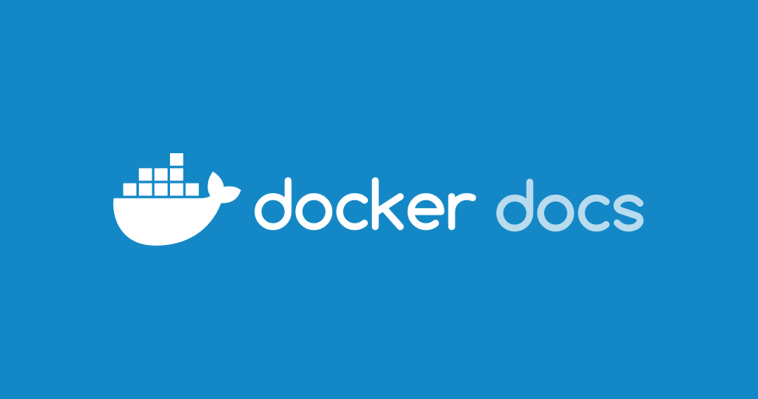

COPY 和 ADD 都是 Dockerfile 中的指令，有着类似的作用。它们允许我们将文件从特定位置复制到 Docker 镜像中。
COPY
COPY 指令从 <src> 复制新的文件或目录，并将它们添加到 Docker 容器文件系统的 <dest> 的路径下。
COPY 有两种格式：
COPY [--chown=<user>:<group>] <src>... <dest>COPY [--chown=<user>:<group>] ["<src>",... "<dest>"]（包含空格的路径使用这种格式）
ADD
ADD 有两种格式：
ADD [--chown=<user>:<group>] <src>... <dest>ADD [--chown=<user>:<group>] ["<src>",... "<dest>"]（包含空格的路径使用这种格式）
从 URL 复制的 Dockerfile 最佳实践
通过 URL 进行复制的效率通常很低，最佳实践是使用其他策略来包含所需的远程文件。
COPY 只支持基础的复制：将本地文件复制到容器中。
而 ADD 有一些额外的功能 ：
- ADD 指令可以让你使用 URL 作为
<src>参数。当遇到 URL 时候，可以通过 URL 下载文件并且复制到<dest>。 - ADD 的另一个特性是自动解压文件的能力。如果
<src>参数是一个可识别压缩格式（tar, gzip, bzip2, …）的本地文件（注：无法实现同时下载并解压），就会被解压到指定容器文件系统的路径<dest>下。
因此，ADD 的最佳用途是将本地压缩包文件自动提取到镜像中：
1 | ADD code.tar.gz /app/ |
由于镜像的体积很重要，所以强烈建议不要使用 ADD 从远程 URL 获取文件，我们应该使用 curl 或 wget 来代替。这样我们可以在解压后删除这些不再需要的文件，同时还也可以避免在镜像中生成额外的层。
我们应该避免以下操作：
1 | ADD http://example.com/big.tar.xz /usr/src/things/ |
这个压缩包解压后，rm 命令处于独立的镜像层。
我们可以这样做：
1 | RUN mkdir -p /usr/src/things \ |
curl 会下载这个压缩包并通过管道传给 tar 命令进行解压，这样也就不会在文件系统中留下这个压缩文件了。
对于不需要自动解压的文件或目录，应该始终使用 COPY。
最后，认准一个原则：总是使用 COPY（除非我们明确需要 ADD）。